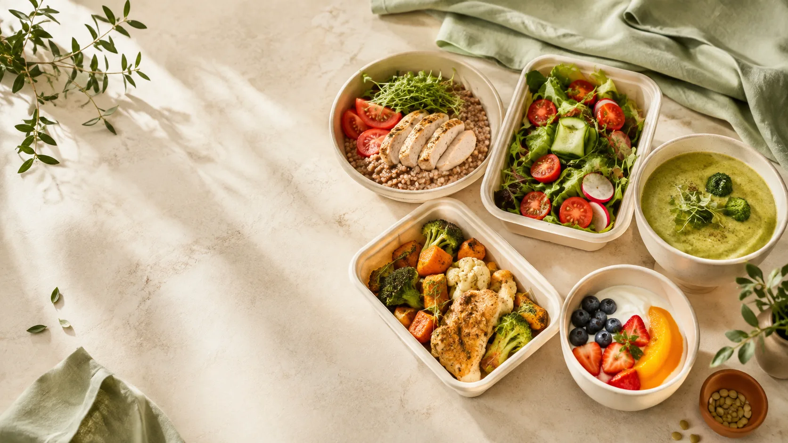

документ · 16 страниц
Инвестиционная презентация
Краткая визуальная логика продукта, локального рынка, экономики, капитала и этапов.
Запросить доступОдин город, один основной рацион, 14-дневный цикл. Инвестиционная логика строится не на «большом общем рынке», а на повторной покупке, фактической себестоимости, плотности маршрута и контролируемом наборе объёма.
Сайт не публикует конфиденциальные файлы в статическом сборке. Доступ к ним — через отдельный защищённый контур или адресный запрос.

Модель специально построена как цепочка проверяемых причин: спрос → повтор → плотность → экономика → решение о росте.
Занятый человек каждый день планирует, покупает или заказывает еду.
Пять приёмов, заранее известное меню и единая сборка.
пакетная-подготовка, повторное сырьё, контроль рецептуры и выхода.
Кухня, упаковка и доставка дешевеют на один рацион при объёме.
Первый заказ, повтор, себестоимость, списания, доставка.
Масштабирование только после прохождения контрольных критериев.

14 дней, 70 блюд, полные граммовки, выход и расчётное КБЖУ уже структурированы. Рецептуры имеют статус контрольной проработки, поэтому сайт не выдаёт их за лабораторно подтверждённые значения.
Население города — контекст, не доказательство спроса. Практический вопрос: сколько активных покупателей нужно, чтобы ежедневно получить необходимое число рационов.
Основной сценарий взят из предоставленной финансовой модели. Поля ниже редактируются, чтобы увидеть, что именно меняет вклад, безубыточность и месячный результат.
Для визуализации между 25 и 40 рационами используется линейная интерполяция двух cost-профилей финансовой модели. Это интерфейсная аппроксимация, а не отдельный прогноз модели.
| Сценарий | Цена | Сырьё | Вклад/день | Результат/мес | Статус |
|---|
Сценарии соответствуют листу «Чувствительность» предоставленной финансовой модели при 60 рационах/день и 26 рабочих днях.
Это не обещание результата, а визуализация текущей таблица-модели. Месячный план ограничивает объём спросом и мощностью, а 13-недельный блок показывает, как инвестиционные транши поддерживают пилот.
| Месяц | Рационов/день | Выручка | Опер. результат | Рентабельность |
|---|
Прямые значения из листа «План 36 месяцев» финансовой модели.
Срок удержания здесь является вводимым сценарием, а не подтверждённым LTV. Paid CAC считается из стоимости заявки и конверсии в первый заказ и не включает органический поток.
Каждая статья привязана к результату, который должен снизить конкретную неопределённость проекта.
Кухня, техкарты, упаковка, правовой и платёжный контур.
Фактическая партия, логистика, первые покупатели, повтор.
Оборотный капитал, продвижение и запас до безубыточности.
Прохождения или остановки критерии взяты из бизнес-плана; они позволяют не продолжать масштабирование по инерции.
Кухня, техкарты, упаковка, контрольная готовка, сайт, форма.
Процесс можно повторитьПервые оплаченные участники, фактическая себестоимость, вкус, доставка.
≥25 покупателей · ≥100 рацион-днейПлатная группа и повторные покупки.
Повтор ≥35%Рост до 40–60 рационов/день при контролируемом привлечении.
Вклад ≥10 бел. руб. и ≥25%Вероятности не выдуманы. Вместо случайных процентов — ранний сигнал, последствия и конкретное действие.
Сигнал: довольны первым днём, не возвращаются.
Действие: менять вкус, упаковку, окно доставки или пакет.
Сигнал: себестоимость выше дневного предела.
Действие: замена ингредиента, фиксация цен, переработка меню.
Сигнал: отклонение выхода, температуры или времени.
Действие: удержание партии, переделка, резервная кухня.
Сигнал: много одиночных адресов.
Действие: сужение зон, окна, группировка маршрута.
Сигнал: CAC выше вклада первых дней.
Действие: остановить канал и переработать предложение.
Сигнал: решения и контроль зависят от одного человека.
Действие: инструкции, ответственные, недельный обзор.
В модели явно отмечено, какие входы должны быть заменены коммерческими предложениями, контрольной готовкой и фактическими заказами.
| Категория | Источник | Что использовано | Ограничение |
|---|
В статической сборке кнопка формирует адресный запрос. Для рабочей версии можно подключить защищённый доступ / закрытое хранилище и указать защищённый URL в конфигурации.
Краткая визуальная логика продукта, локального рынка, экономики, капитала и этапов.
Запросить доступПродукт, меню, рынок, цена, экономика, кухня, поставщики, финансовый план, KPI и риски.
Запросить доступИсходные данные, экономика дня, воронка, 36 месяцев, 13 недель, денежный поток, чувствительность и контроль.
Запросить доступФайлы сохранены в исходном проекте в `закрытых материалах/`, но сборка намеренно не копирует их в `dist`. Это устраняет ложную «защиту» через подтверждение в интерфейсе.
Все финансовые прогнозы являются расчётами. Фактические договоры, коммерческие предложения, контрольные готовки и оплаченные заказы имеют приоритет над открытыми источниками.
Цель первого этапа — не «доказать, что идея хорошая», а получить данные, после которых можно обоснованно продолжить, изменить или остановить формат.
Укажите, что именно хотите проверить: продукт, кухня, экономика заказа, предположения, финансовая модель или формат участия.